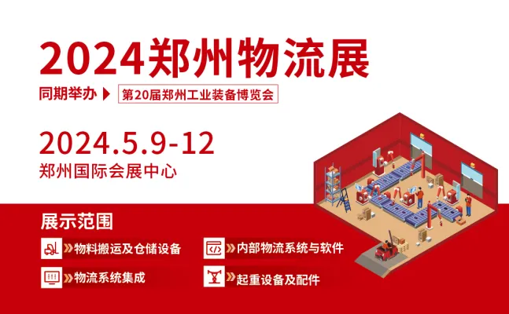

5月郑州物流展
首页 / 5月郑州物流展智能制造，物流先行。在现代工厂环境中，物流不仅是支持生产的后勤系统，更是整个生产体系的核心组成部分，建设和升级智能化、数字化的整厂物流系统，将直接影响工厂的效率、质量和盈利能力。随着中部制造业加快数字化转型，推动制造业高端化智能化绿色化发展，智能物流体系的建设，是实现智能制造至关重要的一环。各行各业都在推进供应链与物流的数智化转型升级，智能物流装备和系统成为刚性需求。
2024郑州物流装备与技术展览会迎合行业发展趋势，重点关注用户需求，将全面展示物料搬运及仓储设备、物流系统集成、内部物流系统与软件、起重设备及配件等，同期举办第20届郑州工业装备博览会，汇集国内外一线品牌企业，展示新产品新技术及行业解决方案，满足展商与买家更高效的商业洽谈及资源对接，共同以数智物流技术赋能高端制造。

● 举办时间：2024年5月9-12日
● 举办地点：郑州国际会展中心
● 展商：2500家
● 专业观众：70000名
● 展示面积：70000平方米
● 大会官网：www.zzgbh.cn
● 主办单位：中国机械工业联合会、天津振威国际会展集团股份有限公司、郑州海名汇博会展策划有限公司
● 承办单位：郑州海名汇博会展策划有限公司、郑州振威名海会展有限公司
【展示范围】
·物料搬运及仓储设备：叉车，AGV，货架，托盘，脚轮
·物流系统集成：包装及输送订单分拣设备，包装材料，自动化立库
·内部物流系统与软件：供应链管理，仓储管理软件，智能工厂
·起重设备及配件：起重机，平衡吊，电动机，减速机，制动器，缓冲器
【观众行业】
物流、快递、城配、电商/跨境电商、食品饮料、农产品、汽车及零部件、生物医药、餐饮连锁、商超零售、烟草、工业制造、新能源、电池、储能、光伏、3C电子及半导体、家电
电力电气、鞋服、家具家居、石油化工等
【中部工业采购节】
展会现场将举办“中部工业采购节”，展会现场提供采购商购机补贴，同时，也将有多家展商多款最新机型、产品首发以及各种打折、满减、返利等多重福利，切实为参展商和采购商谋福利，降低采购成本助力中部制造企业快速恢复，强化供应链、提升软实力推动企业技术改造、生产线升级、智能制造转型！
【参展/参观】
郑州振威名海会展有限公司
地址：郑州市郑东新区商务内环路29号新蒲大厦12楼
电话：0371-86680231 15038392685